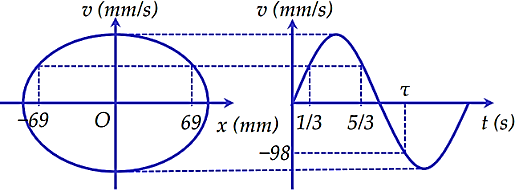

📋 Quy định làm bài
- Thời gian: 65 phút. Còn 10 phút hệ thống nhắc; hết giờ có thêm 5 phút gia hạn rồi tự động nộp.
- Bài làm ở chế độ toàn màn hình. Chuyển tab, mất focus, thoát toàn màn hình đều bị ghi nhận và báo cho giáo viên.
- Không dùng chuột phải, sao chép/dán, phím tắt. Trợ lý AI chỉ mở sau khi nộp bài. Phần tự luận: AI gợi ý điểm, giáo viên duyệt điểm chính thức.
PHẦN I. Câu trắc nghiệm nhiều phương án lựa chọn
Mỗi câu có 4 phương án, chỉ chọn một đáp án đúng (0,25 điểm).
1
Một chất điểm dao động điều hòa có phương trình gia tốc là $a=160\cos\left(2\pi t+\frac{\pi}{2}\right)$ cm/s$^2$. Lấy $\pi^2=10$. Xác định biên độ dao động của vật.
2
Một chất điểm dao động điều hòa theo phương trình $x=6\cos\left(2\pi t+\frac{\pi}{2}\right)$ cm, pha dao động của chất điểm tại thời điểm $t=3$ s là
3

Khi làm thực hành về hiện tượng cộng hưởng cơ, ta có hệ thống các con lắc đơn bố trí như hình vẽ. Con lắc (1) là con lắc điều khiển, khi con lắc (1) dao động thì các con lắc còn lại cũng sẽ dao động. Kéo con lắc điều khiển (1) lệch khỏi vị trí cân bằng rồi thả nhẹ cho dao động. Không xét con lắc (1), con lắc dao động mạnh nhất là
4
Một con lắc lò xo có khối lượng vật nặng là $m_1=300$ g dao động điều hòa với chu kì 1 s. Nếu thay vật nặng $m_1$ bằng vật nặng có khối lượng $m_2$ thì con lắc dao động với chu kì 0,5 s. Giá trị của $m_2$ bằng
5
Một vật dao động điều hòa theo phương trình $x=6\cos\left(2\pi t+\frac{\pi}{3}\right)$ cm. Pha ban đầu của dao động là
6
Tốc độ và li độ của một chất điểm dao động điều hòa có hệ thức $\frac{x^{2}}{16}+\frac{v^{2}}{640}=1$ ($x$ tính bằng cm, $v$ tính bằng cm/s). Lấy $\pi^2=10$. Chu kì dao động của chất điểm là
7
Vận tốc của vật dao động điều hòa có độ lớn cực đại khi
8
Đối với dao động điều hòa, khoảng thời gian ngắn nhất mà sau đó trạng thái dao động của vật được lặp lại như cũ được gọi là
9
Một vật dao động điều hòa theo phương trình $x=8\cos(2\pi t)$ cm. Biên độ dao động của vật là
10
Trong dao động điều hòa, li độ, vận tốc và gia tốc là ba đại lượng biến đổi điều hòa theo thời gian
11

Tim co bóp theo nhịp đo được điều khiển bằng một hệ thống các xung điện dẫn truyền trong cơ tim. Máy điện tim ghi nhận những xung điện này và hiển thị dưới dạng đường điện tâm đồ. Đó là những đường gấp khúc, lên xuống biến thiên theo nhịp co bóp của tim. Hình bên là một hình ảnh điện tâm đồ thu được từ một máy điện tim. Biết rằng mỗi khoảng vuông (theo chiều ngang) tương ứng với khoảng thời gian 0,05 s. Số nhịp tim trung bình trong 1 phút ứng với giá trị nào sau đây.
12
Một vật dao động điều hòa theo phương trình $x=5\cos\left(10\pi t+\frac{\pi}{6}\right)$ cm. Li độ của vật vào thời điểm $t=0{,}05$ s là
13
Hai con lắc lò xo giống hệt nhau đặt trên cùng mặt phẳng nằm ngang. Con lắc thứ nhất và con lắc thứ hai dao động điều hòa cùng pha với biên độ lần lượt là $3A$ và $A$. Chọn mốc thế năng của mỗi con lắc tại vị trí cân bằng của nó. Khi động năng của con lắc thứ nhất là 0,72 J thì thế năng của con lắc thứ hai là 0,24 J. Khi thế năng của con lắc thứ nhất là 0,09 J thì động năng của con lắc thứ hai là
14

Hình bên là đồ thị biểu diễn sự phụ thuộc của vận tốc $v$ theo thời gian $t$ của một vật dao động điều hòa. Phương trình dao động của vật là
15
Khi làm việc dài ngày trên các trạm không gian vũ trụ, việc theo dõi các chỉ số sức khoẻ như chiều cao, khối lượng cơ thể của các nhà du hành vũ trụ rất quan trọng. Khi đó cần có loại cân đặc biệt để xác định khối lượng của nhà du hành vũ trụ. Một dụng cụ được thiết kế để cho phép các nhà du hành xác định khối lượng của họ ở điều kiện không trọng lượng. Nó là một cái ghế có khối lượng $m$ gắn ở đầu một lò xo có độ cứng $k$. Đầu kia của lò xo được gắn vào một điểm cố định của trạm. Một máy đếm điện tử được kết nối với chiếc ghế có thể đo được chu kì dao động của ghế. Để đo khối lượng của nhà du hành thì nhà du hành phải ngồi vào chiếc ghế rồi cho chiếc ghế dao động.
Trong một lần kiểm tra cân nặng của một nhà du hành, máy đo đã đo được chu kì dao động của ghế khi không có người là $T_0=1{,}0$ s và chu kì của ghế khi có nhà du hành ngồi là $T=2{,}5$ s. Biết độ cứng của lò xo sử dụng trong dụng cụ này là 480 N/m. Cân nặng của nhà du hành gần nhất với giá trị nào dưới đây?
Trong một lần kiểm tra cân nặng của một nhà du hành, máy đo đã đo được chu kì dao động của ghế khi không có người là $T_0=1{,}0$ s và chu kì của ghế khi có nhà du hành ngồi là $T=2{,}5$ s. Biết độ cứng của lò xo sử dụng trong dụng cụ này là 480 N/m. Cân nặng của nhà du hành gần nhất với giá trị nào dưới đây?
16

Một chất điểm dao động điều hòa trên trục Ox có đồ thị biểu diễn vận tốc $v$ theo li độ $x$ và đồ thị vận tốc theo thời gian như hình vẽ. Tại thời điểm $\tau$, chất điểm qua vị trí có gia tốc có giá trị gần nhất với giá trị nào sau đây?
PHẦN II. Câu trắc nghiệm đúng sai
Trong mỗi ý a), b), c), d) chọn Đúng hoặc Sai. Đúng 1 ý: 0,1 · 2 ý: 0,25 · 3 ý: 0,5 · 4 ý: 1,0 điểm.
1

Một vật dao động điều hòa có đồ thị động năng theo thời gian như hình vẽ. Trong những nhận định dưới đây, chỉ ra nhận định đúng, nhận định sai.
a) Vào thời điểm ban đầu, vật ở vị trí biên.
b) Vào thời điểm $t=0{,}25$ s, cơ năng của vật là 0 J.
c) Vật dao động với chu kì 0,5 s.
d) Vào thời điểm $t=0{,}125$ s vật có động năng bằng thế năng.
2

Quan sát đồ thị li độ - thời gian của hai vật dao động điều hòa trên hình, dao động thứ nhất (1) được biểu diễn bởi đường nét liền và dao động thứ hai (2) được biểu diễn bởi đường nét đứt. Trong những nhận định dưới đây, chỉ ra nhận định đúng, nhận định sai.
a) Dao động (2) có biên độ gấp đôi biên độ dao động (1).
b) Đây là hai dao động ngược pha.
c) Vào thời điểm $t=0{,}75$ s, gia tốc của vật (2) có giá trị cực đại.
d) Vận tốc cực đại của vật (1) là 5 cm/s.
3
Khi nói về dao động tắt dần, dao động cưỡng bức và hiện tượng cộng hưởng. Trong những nhận định dưới đây, chỉ ra nhận định đúng, nhận định sai.
a) Dao động tắt dần có cơ năng giảm dần theo thời gian.
b) Biên độ của dao động cưỡng bức chỉ phụ thuộc vào biên độ của ngoại lực cưỡng bức.
c) Khi có cộng hưởng thì dao động của hệ không phải là điều hòa.
d) Bộ phận giảm xóc của xe máy là một trong những ứng dụng của dao động tắt dần.
PHẦN IV. Tự luận
Viết lời giải đầy đủ. Bấm “Nộp để AI gợi ý điểm”: AI chấm gợi ý theo biểu điểm, giáo viên sẽ duyệt điểm chính thức.
1
Một vật dao động điều hòa trên quỹ đạo dài 12 cm. Tại thời điểm $t=0$, vật qua vị trí cân bằng theo chiều dương với tốc độ là 0,6π m/s. Lấy $\pi^2=10$.
a. Viết phương trình dao động của vật.
b. Tìm vận tốc, gia tốc của vật vào thời điểm 1,25 s.
a. Viết phương trình dao động của vật.
b. Tìm vận tốc, gia tốc của vật vào thời điểm 1,25 s.
2
Một vật có khối lượng 300 g dao động điều hòa với phương trình $x=10\cos\left(20t+\frac{\pi}{3}\right)$ cm.
a. Tính cơ năng của vật.
b. Tính tỉ số giữa động năng và thế năng của vật tại thời điểm ban đầu.
a. Tính cơ năng của vật.
b. Tính tỉ số giữa động năng và thế năng của vật tại thời điểm ban đầu.